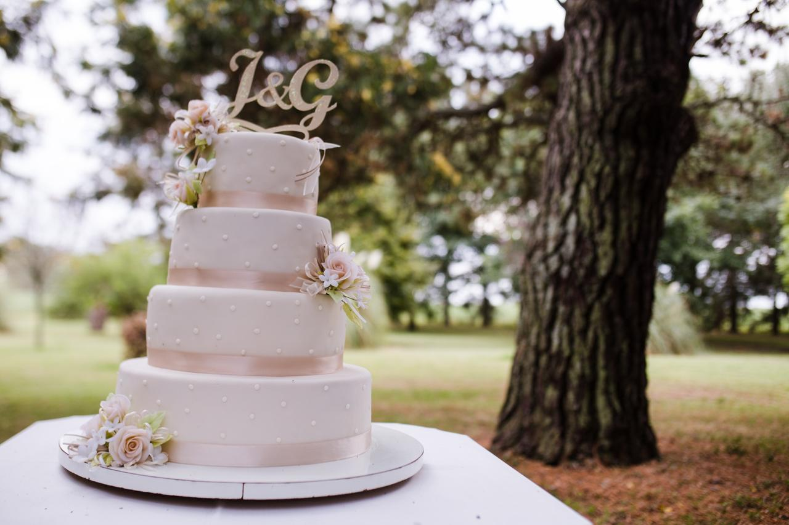
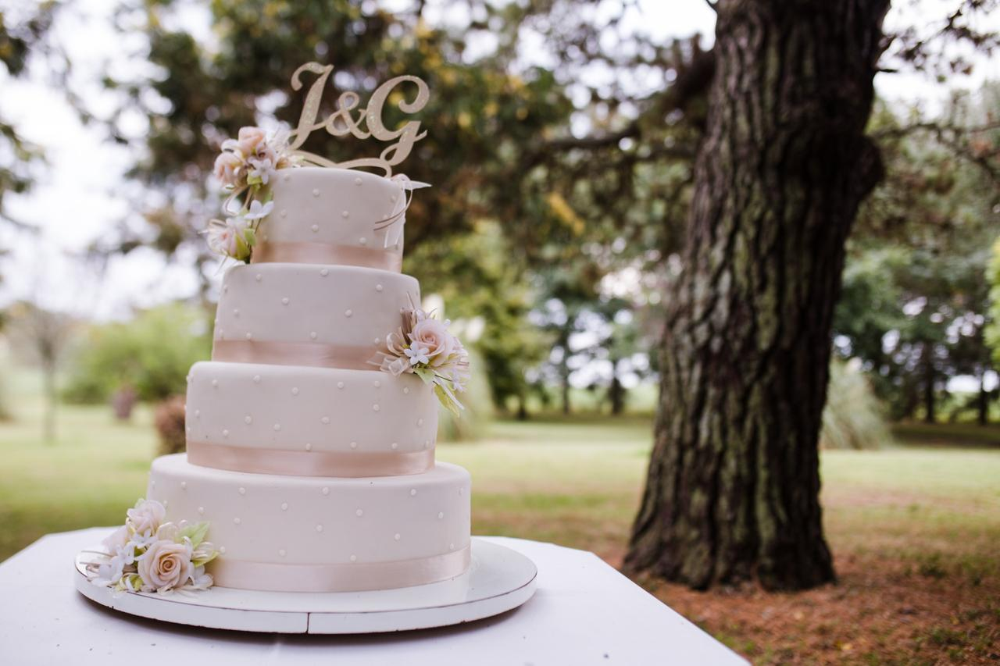

Tortas artesanales!!
¡sorprende a todos →!

Galería Completa
 

Contacto
cuando elegimos la foto tiene un formulario a llenar, podriamos ver si ponemos redes sociales con los logos por aqui
Ofertas
Luego pondemos ofertas por aqui
Sobre Nosotros
La historia de "Dulces Sueños" comienza hace diez años, cuando María, una apasionada de la repostería,
decidió seguir su verdadera vocación. Desde pequeña, María siempre había disfrutado horneando
y decorando pasteles para amigos y familiares.
Sin embargo, fue en su búsqueda de perfección que encontró la Academia Liga, un centro de formación
reconocido por su excelencia en pastelería y repostería.
En la Academia Liga, María se sumergió en un mundo de técnicas, ingredientes y creatividad.
Aprendió de los mejores maestros pasteleros y disfrutó de cada momento, desde la elaboración
de masas hasta la decoración final. Este espacio no solo le brindó conocimientos técnicos,
sino que también la inspiró a soñar en grande.
Tras completar su formación, María comenzó a trabajar en diversas pastelerías de la ciudad,
donde adquirió experiencia valiosa y desarrolló su propio estilo único. Sin embargo,
siempre sintió que había algo más grande esperándola. Fue entonces cuando decidió dar el salto
y abrir su propia pastelería: "Dulces Sueños".
Con una mezcla de creatividad y pasión, María lanzó "Dulces Sueños" en su barrio. Desde el primer
día, su propósito fue ofrecer productos hechos con amor y los mejores ingredientes.
Su especialidad eran los pasteles personalizados, ideales para celebraciones y momentos especiales.
El éxito fue inmediato; sus creaciones se volvían virales en las redes sociales y la clientela
crecía rápidamente.
Después de diez años de trabajo arduo, "Dulces Sueños" se ha convertido en un referente en la
comunidad. María no solo se enorgullece de sus deliciosos postres, sino también de haber creado un espacio donde cada cliente puede sentir la alegría y la calidez de un momento especial. Además, ha comenzado a impartir talleres de repostería, retribuyendo a la comunidad lo que aprendió en la Academia Liga.
Hoy en día, "Dulces Sueños" se sigue expandiendo, siempre con la vista puesta en ofrecer lo mejor.
La historia de María es un testimonio de que la pasión y el esfuerzo pueden convertir un sueño en
una dulce realidad.